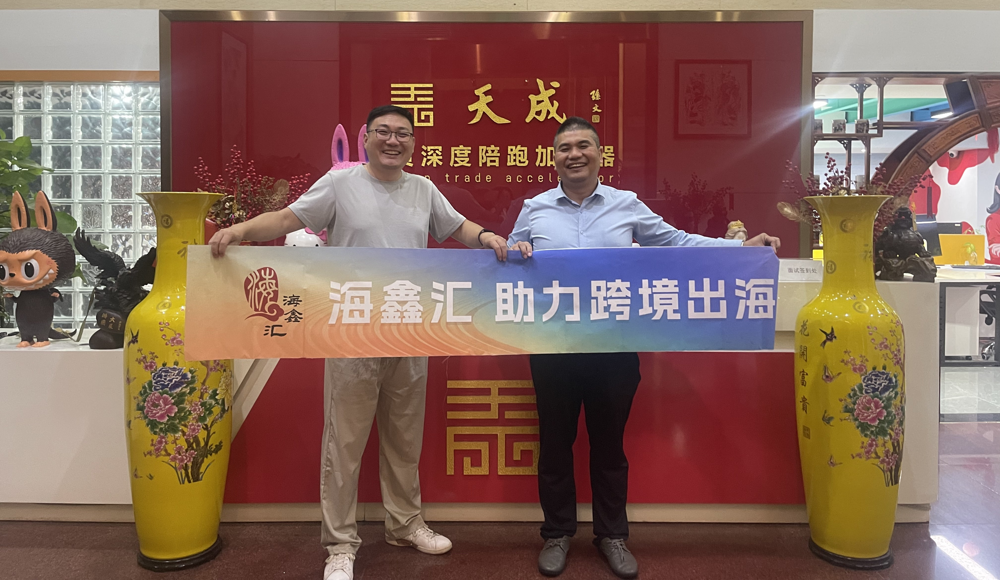
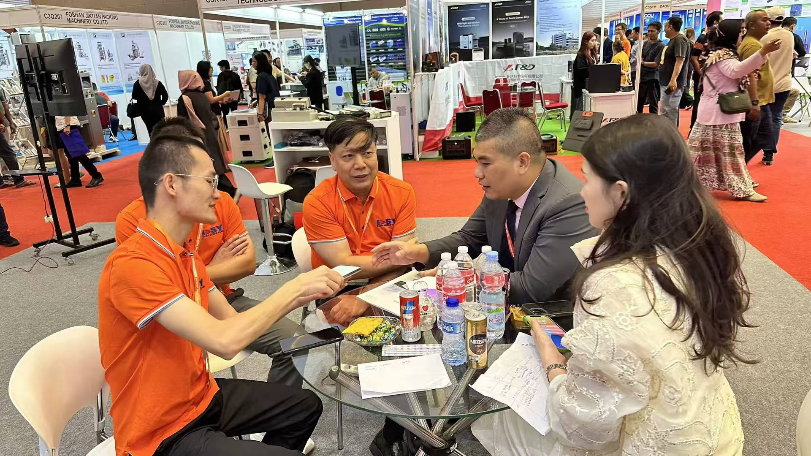
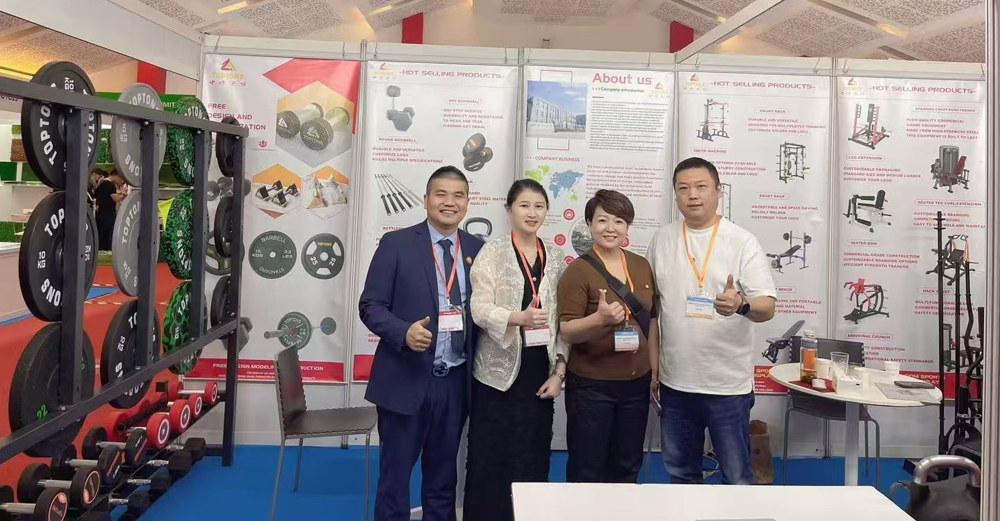

中国企业出海如何避坑？28个海外市场一线考察的实战结论
How 28 on-the-ground market visits reshape Chinese companies' outbound playbook.

活动背景
和君商学出海班出海企业家访谈第三期如约而至。本次访谈嘉宾是深耕企业出海赛道20年的行业专家——大麦哥（陈俊文）。大麦哥拥有28个海外市场的实况考察经验，10年累计线下授课超过680场、学员逾5万人，深度陪跑1000家外贸企业。在与和君商学出海班班主任Bruce（董立鑫）的一个小时对话中，大麦哥为在场企业代表带来了一场关于企业出海的实战知识盛宴。
一、时代大势：从销售驱动到品牌驱动
大麦哥结合自身20年深耕出海赛道的人生领悟，提出了“顺势而为、选准行业”的人生大方向。他指出，企业发展的底层逻辑已从单一要素竞争转向系统性能力构建；从时代演进、国家战略到行业变革，最终落脚于个体能动性的释放。
在出海企业的发展历程中，销售驱动、营销驱动、品牌驱动层层递进，构成独特的价值创造体系：
- 销售驱动（初级阶段）：以渠道覆盖和价格竞争为核心，通过第三方平台代运营、传统贸易渠道铺货等方式快速获取市场份额。企业关注的是“如何把货卖出去”，核心竞争力在于供应链效率和渠道渗透率，但面临同质化竞争加剧、利润空间压缩的困境。
- 营销驱动（中级阶段）：转向数据驱动的精准获客与用户运营，通过社媒内容营销、KOL合作、搜索引擎广告等手段提升转化效率。企业开始构建用户画像和消费行为数据库，但尚未形成稳定的心智资产。
- 品牌驱动（高级阶段）：建立文化认同与情感连接，通过价值观输出和场景化体验形成用户忠诚度。企业已超越产品功能竞争，构建起包含品牌故事、视觉符号、文化隐喻的完整价值体系。
大麦哥指出，当前95%的中国出海企业仍处于销售驱动的初级阶段，反映出中国企业在价值链攀升过程中面临的集体性挑战。唯有将个体努力嵌入时代洪流，使销售能力升维为品牌势能，企业方能在VUCA时代实现可持续增长。
二、美墨市场简析：机遇与挑战并存
大麦哥结合自身在美国、墨西哥的深度考察，提出当前全球经贸格局正经历深刻变革，中国制造业正以高质量发展重塑国际竞争力。
中国出口结构转型彰显产业升级成效：“新三样”（新能源汽车、锂电池、光伏产品）2024年出口突破2.6万亿元，同比增长27.6%，而传统劳动密集型产品出口占比持续下降。这种“含新量”跃升既源于技术创新，也得益于RCEP等机制推动的产业链深度整合。中国制造业正从规模扩张转向价值创造，为全球供应链注入新动能。
同时，中美消费市场呈现结构性差异：美国人均年消费支出达5.7万美元（约为中国的12倍），其高附加值服务消费占比70%。由此可见，美国仍是中国出海的理想目的地，中国出海企业应最大化地开发利用美国市场。
大麦哥也提出“越出国，越爱国”的感悟。一方面，墨西哥作为中国重要的新兴市场，犯罪率居高不下（2024年仅瓜纳华托州的凶杀案就达1863起）；另一方面，中国新能源车企凭借技术创新与本地化生产，在墨西哥市场实现突破性增长，街头新能源车占比显著提升，印证“中国制造”突围能力的同时，也提醒出海企业一定要注意两国国情不同带来的巨大挑战。
三、中小企业出海注意事项：从“产品出海”到“经营出海”
中国制造业全球化正经历从“产品出海”到“经营出海”的范式升级。在早期OEM代工阶段，中国企业以供应链优势完成原始积累，但存在“产品越洋、决策滞后”的痛点。
当前头部企业已形成“决策层出海+本地化运营”的新模式，决策团队深度参与产品迭代，使新品上市周期缩短40%。这种变革源于两个维度的市场洞察：
- 市场选择的三维聚焦战略：头部企业建立“5-3-1”市场筛选机制：在目标市场的TOP5品类中，选择与本土文化契合度最高、产业链适配度最优、政策风险可控性最强的三个细分领域。这种“一厘米宽度、一公里深度”的聚焦策略，使企业规避同质化竞争，建立细分领域绝对优势。
- 本土化经营的生态重构：企业决策者亲临一线催生运营模式创新。例如一个大件家具企业突破传统地推模式，构建“共享展厅+分布式仓储”网络：在目标市场租赁大型仓库，引入多家本地夫妻店作为展厅节点，通过数字化系统实现库存共享与订单流转，大大降低企业成本。

四、产教融合：三螺旋教学法与人才共育
中国外向型经济正经历从“要素输出”向“人才驱动”的战略转型，复合型国际化人才供需矛盾日益凸显。2025年出海企业对“语言+技术+管理”复合型人才需求同比增长38%，其中东南亚市场技术型管理人才缺口达12万人，人才战略已成为企业全球化布局的核心竞争力。
出海企业对人才的考核维度已从单一技能转向“文化适应力×技术专精度×商业洞察力”的三维模型。然而当前人才供给存在结构性失衡：教育部数据显示，跨境电商、智能制造等新兴领域专业人才供给量仅满足市场需求的42%，且存在3-6个月的能力适应期。
针对以上现状，大麦哥的天成集团主要立足营业额2000万至2亿元的中小企业，力争做出海企业深度陪跑加速器，持续为企业输出人才。在十多年的陪跑过程中，逐渐形成独具一格的培训特色：
- 在教育端与企业端形成“需求共研—课程共建—人才共育”的生态闭环；
- 课程体系重构、实训模式革新、成本优化机制、小班化教学模式的效能释放；
- 创新“三螺旋教学法”：能力互补分组、实战项目驱动、动态评估体系；
- 从源头出发，与高校合作编写教材，将问题尽量在初期便扼杀在摇篮中，以便更有针对性地培养出符合社会实际需求的人才。

本文内容整理自海鑫汇活动记录，首发于海鑫汇官方公众号（2025年10月）。 查看公众号原文 →